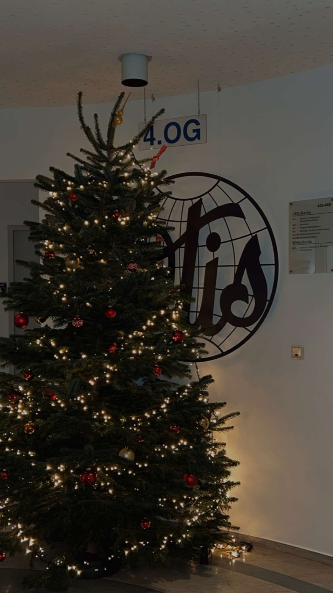

OTIS Lead Design Center, Berlin
Intern, E&E Engineering · August 2025 – January 2026. I led the development of a machine-learning pipeline that finds the root cause of elevator faults from CAN-bus traces. It was a first-of-its-kind approach within the team.


The problem
An elevator's electronic modules talk to each other over a CAN bus. When a fault happens, the recorded traffic, the CAN trace, holds the evidence of what went wrong. But traces are long and dense, and working out the root cause by hand takes an experienced engineer a lot of time.
My job was to see whether machine learning could do that first diagnosis automatically. Nobody on the team had tried it before.
What I built
- An end-to-end ML pipeline that turns raw CAN-trace data into features and classifies the root cause of a fault.
- A HistGradientBoosting model. It's fast on large tabular datasets and handles missing values natively, which suits messy real-world trace data.
- SHAP explanations for every prediction, so engineers from other disciplines can see which signals drove each diagnosis and decide whether to trust it.
- I used GenAI tools to speed up coding and testing.
Results
- 96% diagnostic accuracy on root-cause detection.
- Less time spent on manual fault analysis.
- I presented the results and a proposal for integrating the pipeline into OTIS's predictive-maintenance platform, including ideas for scaling it further.
Firmware build automation
Alongside the ML work, I rewrote a shell-based firmware automation script in Python. It generates the HEX and LD files for firmware builds. The Python version made builds more reliable and the tooling easier to maintain.
How I worked
I led the project on my own from start to finish: planning, development, testing and the final presentation, in an agile-style workflow.